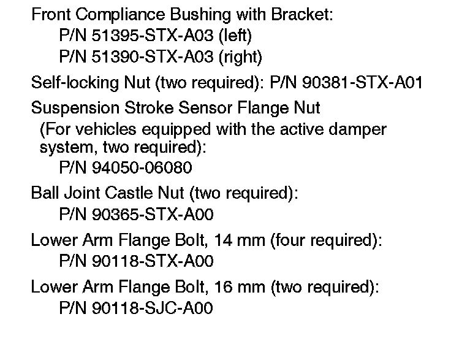
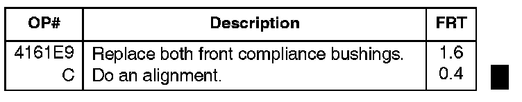

Suspension - Front End Click On Braking/Acceleration
08-005August 28, 2009
Applies To:
2007-08 MDX - ALL
2009 MDX - From 2HNYD2...9H500001 thru 2HNYD2...9H517153
Click From the Front Suspension Area While Accelerating or Braking (Supersedes 08-005, dated July 7, 2009, to revise the information marked by the black bars and asterisks)
REVISION SUMMARY
*Under WARRANTY INFORMATION, the flat rate time for a two-wheel alignment was updated after the operation was reviewed and validated.*
SYMPTOM
There are one or more clicking noises in the front suspension area while accelerating or braking.
PROBABLE CAUSE
The compliance bushings in the front lower arms are faulty.
CORRECTIVE ACTION
Replace both front compliance bushings, and check the wheel alignment.

PARTS INFORMATION
TOOL INFORMATION
Ball Joint Remover, 32 mm:
T/N 07MAC-SLOA102
Ball Joint Thread Protector, 14 mm:
T/N 071AF-53VA000
WARRANTY CLAIM INFORMATION

In warranty:
The normal warranty applies.
Failed Part: P/N 51390-STX-A00
Defect Code: 01102
Symptom Code: 04201
Skill Level: Repair Technician
Out of warranty:
Any repair performed after warranty expiration may be eligible for goodwill consideration by the District Parts and Service Manager or your Zone Office. You must request consideration, and get a decision, before starting work.
DIAGNOSIS
Listen for one or more clicking noises in the front suspension area while accelerating from a moderate stop (between normal and abrupt) or while braking.
^ If you hear the noise, go to REPAIR PROCEDURE.
^ If you don't hear the noise, continue with normal troubleshooting.
REPAIR PROCEDURE
1. Remove one front lower arm assembly:
^ Refer to page 18-17 in the 07-09 MDX Service Manual or
^ Online, enter keywords LOWER ARM, and select Front Lower Arm Removal/Installation from the list.
2. Replace the front compliance bushing:
NOTE:
Make sure you properly align the bushing with the lower arm, and torque it while off the vehicle or the splines will be damaged:
^ Refer to page 18-19 in the service manual, or
^ Online, enter keyword BUSHING, and select Front Lower Arm Removal/Installation from the list. Scroll through the procedure to bushing replacement.
3. Repeat steps 1 and 2 for the other side.
4. Check the front wheel alignment, and adjust it if needed:
^ Refer to page 18-5 in the service manual, or
^ Online, enter keyword ALIGN, and select Wheel Alignment from the list.
5. If equipped with an active damper system, do the headlight initial position learning procedure:
^ Refer to page 22-233 in the service manual, or
^ Online, enter keywords HEADLIGHT LEARN, and select Headlight Initial Position Learning Procedure from the list.

Disclaimer